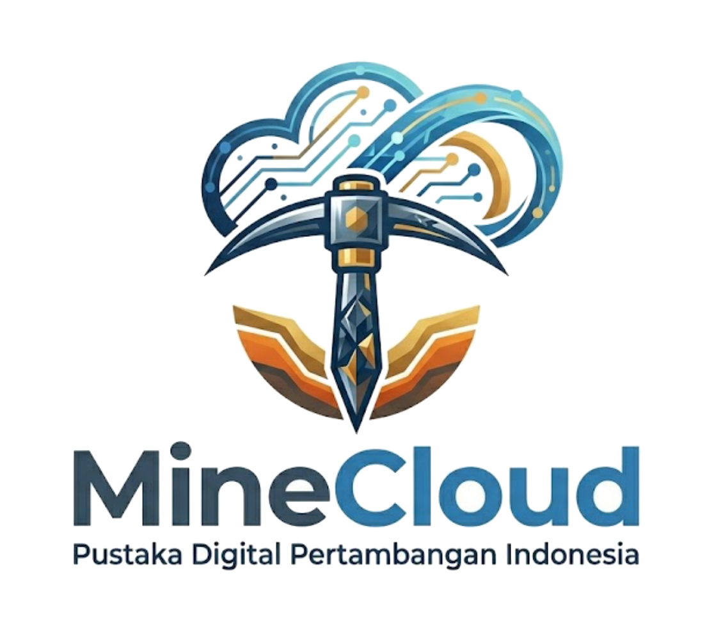

Bertahun-tahun saya belajar dari Anda — langsung maupun lewat pengamatan.
Hari ini saya mengajak Anda untuk membangun sesuatu bersama saya.
Yang saya butuh bukan modal Anda.
Yang saya butuh: pengalaman, jaringan, dan kebijaksanaan Anda.
Generasi muda tambang Indonesia tidak kekurangan informasi.
Mereka kelebihan — tapi semua tersebar tanpa peta.
Mahasiswa harus berburu informasi di YouTube, Telegram, blog, forum, buku, dan grup WhatsApp. Tidak ada satu tempat yang menyediakan knowledge tambang berkualitas secara terstruktur dalam Bahasa Indonesia.
Konten gratis di internet kualitasnya variabel — bisa outdated, salah, atau bahkan misleading. Fresh graduate sering belajar dari sumber yang justru memberikan informasi yang harus mereka ‘lupakan’ setelah masuk lapangan.
Kurikulum kampus sering tertinggal dari realitas lapangan. Mahasiswa lulus dengan textbook knowledge, tapi tidak tahu cara baca dispatch report, hitung cycle time, atau memahami dinamika operasional pit.
| Segmen | Populasi | Reachable | Spend/tahun | TAM/tahun |
|---|---|---|---|---|
| Mahasiswa tambang | 8.000 | 15% | Rp 150rb | Rp 180 jt |
| Fresh graduate | 3.500 | 25% | Rp 400rb | Rp 350 jt |
| Junior engineer | 15.000 | 8% | Rp 800rb | Rp 960 jt |
| Mid-level engineer | 10.000 | 5% | Rp 2 jt | Rp 1 M |
| Corporate B2B | 4.250 PT | 0,5% | Rp 150 jt | Rp 3,15 M |
| Total Realistic SAM | Rp 5,6 M / tahun | |||
MineCloud adalah portal terpadu yang menyediakan buku fisik, ebook, buku interaktif, audiobook, video course, video tutorial, dan aplikasi tambang dalam satu tempat. Dirancang untuk profesional tambang Indonesia di setiap tahap karir — dari mahasiswa hingga senior.
Saya tahu Anda bisa pilih untuk fokus pada karier Anda saat ini, dan itu valid. Tapi saya juga tahu — dari mengamati Anda bertahun-tahun — bahwa Anda peduli dengan masa depan industri ini. MineCloud adalah cara mewujudkan kepedulian itu menjadi infrastruktur nyata.
MineCloud dimulai dari konten edukasi general tambang. Tapi industri kita sangat luas — dan ada banyak vertikal spesifik yang underserved. Berikut peta pengembangan untuk 3–5 tahun ke depan.